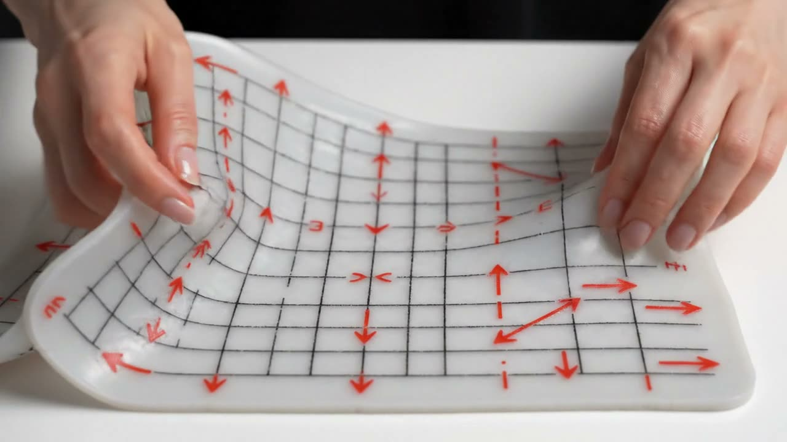

Home / Videos
One 3D animated story for every week. Watch it first, then read the lesson. Footage (Veo) and voice are made with Google Gemini from the lesson text.

MLF · Week 4The special directions of a matrixMLF · Week 5Symmetric matrices: the well-behaved onesMLF · Week 6SVD and PCA: squeezing dataMLF · Week 7Finding the lowest point: gradient descentMLF · Week 8Bowls, not bumpy hills: convexityMLF · Week 9Optimising with rules: Lagrange and KKTMLF · Week 10Probability for machine learningMLF · Week 11The exponential familyMLF · Week 12Estimating parameters, and EMMLT · Week 1PCA: finding the best view of your dataMLT · Week 2Kernel PCA: curved views of dataMLT · Week 3K-means: grouping without labelsMLT · Week 4MLE, Bayes, Gaussian mixtures and EMMLT · Week 5Regression: least squares and its Bayesian viewMLT · Week 6Ridge and LASSO: taming overfittingMLT · Week 7k-NN and decision treesMLT · Week 8Generative models: Naive BayesMLT · Week 9Perceptron and logistic regressionMLT · Week 10Support vector machinesMLT · Week 11Bagging, boosting and AdaBoostMLT · Week 12Neural networksMLP · Week 1Your first end-to-end ML projectMLP · Week 2The project continued: pipelines and tuningMLP · Week 3Linear regression and gradient descent in sklearnMLP · Week 4Polynomial regression and regularisationMLP · Week 5Logistic regression in sklearnMLP · Week 6Binary classifiers and how to judge themMLP · Week 7Multiclass classifiersMLP · Week 8SVMs in sklearnMLP · Week 9Decision trees and ensemblesMLP · Week 10Random forests, boosting and tuningMLP · Week 11Neural networks in sklearnMLP · Week 12Unsupervised learning in sklearn